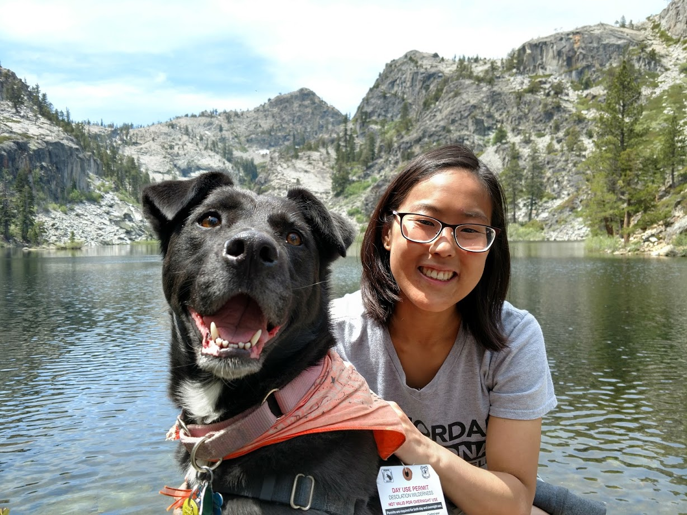

I was born in the Philippines, but emigrated to the US in 1990. I occasionally visit, but I have few memories from there. I grew up in the Chicago area and studied chemistry at a small liberal arts college called Knox in Galesburg, IL. There I met my future wife, Naomi in the choir

After graduation, I spent some time in a medical laboratory in Chicago working on Pancreatic Cancer models. I managed the lab and ran experiments for 5 years. I got to experience many aspects of the scientific process. Then Naomi got into medical school at the Medical College of Wisconsin, so we moved to Milwaukee!

There, I worked for a time as a medical scribe and worked alongside MDs as they treated patients in the Emergency Department. I wrote medical notes from scratch and learned to type rather quickly. During that time, I also found that I enjoyed working with computer science logic constructs. Eventually I made a decision to pick up Python and find a job in the medical tech sector.
I found a position at DART Chart helping nursing homes interpret patient contracts and bill appropriate amounts from insurance companies. There I was able to write some tools to help analysts be more efficient as well as integrations to increase our information base. Then, in the summer of 2018, Naomi graduated medical school. So we drove our '93 Camry out to San Francisco!

I was able to work remotely with DART Chart for a smooth transition to the Bay Area. Moving forward, I seek to solidify my foundations as a software developer with Rithm and then leverage my experience in medicine and research to find a solid role in Health IT